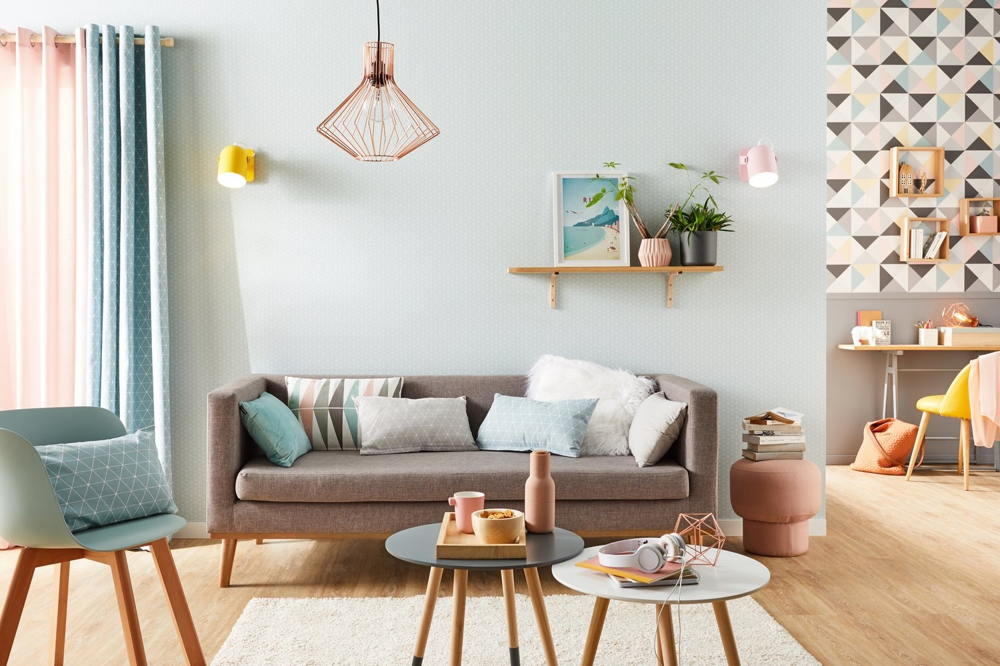
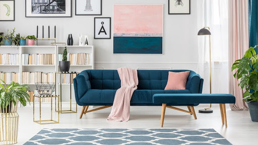
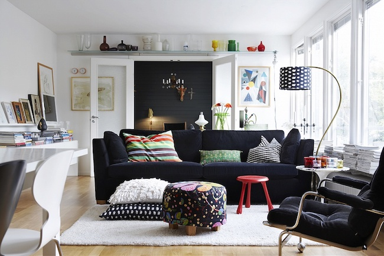
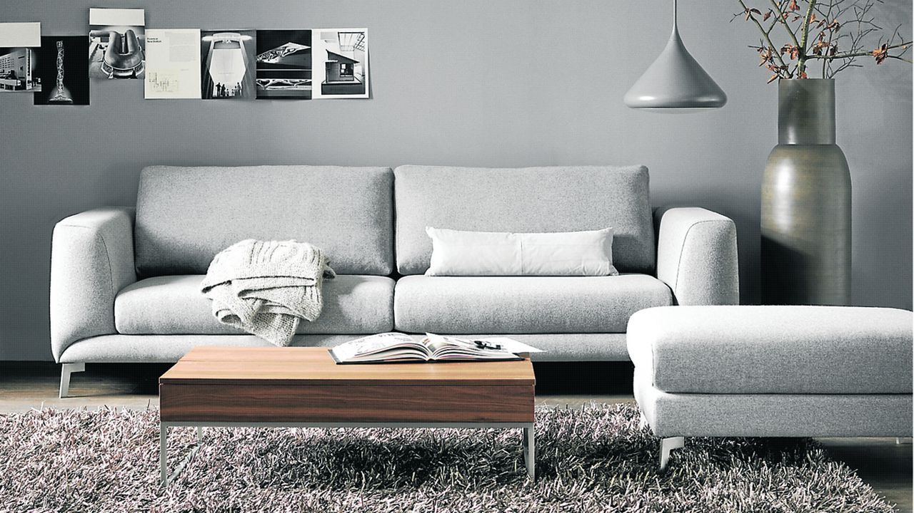
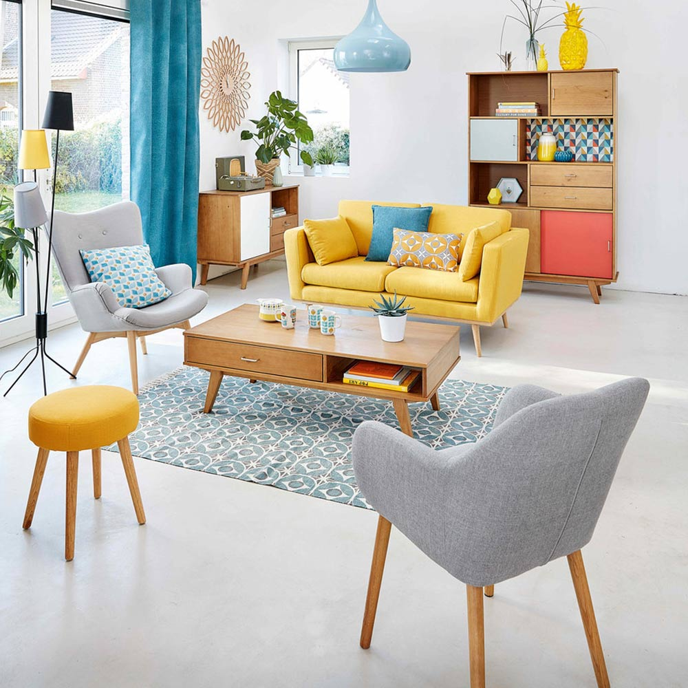
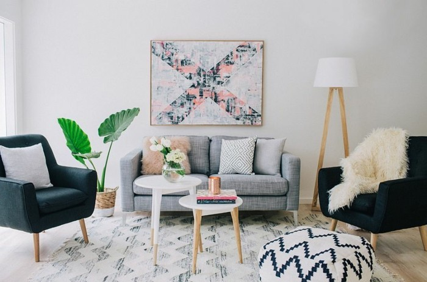

DECOUVREZ NOS PRODUITS

Description: Le canapé convertible "REFRESHA" est un canapé-lit type clic-clac pratique et confortable, au top de la tendance.
Son revêtement en tissu et ses pieds en bois apporteront une touche chaleureuse en même
temps qu'un côté moderne et "chic" dans votre salon, séjour ou chambre.
Description technique:
Couleur: Gris Matière détail: Tissu , Dimensions: Canapé: L220*P86*H86 cm, Pied: 50 cm
Prix: 3.000.000 Ar

Description: Un salon au style nordique et chic, c'est le canapé scandinave Hoga bleu royal
3 places, Surélevé par rapport au sol, ce canapé s'appuie sur une structure bois, un piétement
des plus raffinés pour habillez votre salon.
Un soin particulier a été pris pour ce canapé, afin d'offrir un bel équilibre de proportions.
Pourvu d'une assise, d'un dossier et d'accoudoirs rembourés, le canapé Hoga bleu royal vous
offrira un confort optimal.
Description technique:
Couleur: Bleu royal Nombre de places: 3 Tissu , 2 oreillers fournis , pose pieds
Prix: 2.000.000 Ar

Description: Le salon "CREEP", une assise confortable et conviviale!
Grâce à sa forme, il peut acceillir jusqu' à 4 personnes tout en délimitant l'espace salon
du reste du séjour. On aime le canapé CREEP aui propose une place pour chaque
membre de la famille dans les dimensions qui n'encombmre pas l'espace
Pourvu d'une assise, d'un dossier et d'accoudoirs rembourés, le canapé Hoga bleu royal
vous offrira un confort optimal.
Description technique:
Couleur: Noir Nombre de places: 5 Tissu , Dimensions: L268*P172 * H82 cm,
Hauteur accoudoirs: 63 cm, Pied: 20 cm
Prix: 3.200.000 Ar

Description: Ce canapé 3 places en velours "CIGALES" est idéal pour apporter de la personnalité
à son intérieur.
Sa belle couleur gris lui confère un charme qui créera une atomosphère chaleureuse.
Cette teinte est une couleur douce idéale pour réchauffer un intérieur tout en lui apportant
une touche colorée subtile! Revêtu de velours, le canapé CIGALE est une assiste tendance et élégante.
Description technique:
Couleur: Noir Nombre de places: 4 Dimensions totales: L250*P 128 * H80 cm,
Hauteur accoudoirs:70 cm, Pied: 50 cm Type de mousse: Mousse polyether, Poids: 40 kg
Prix: 3.500.000 Ar

Description: Détendez-vous grâce au canapé scandinave Norden et sa large méridienne,
idéale pour s'allonger le temps d'un instant.
Pour acceuillir 4 personnes, ce canapé s'adaptera parfaitement à tous les environnements
intérieus. Son design simple et épuré convient en effet à tous les types de décoration.
Niveau confort, son garnissage d'assise et dossier lui offre souplesse, moelleux et tenue.
Description technique:
Couleur: Gris et Jaune Nombre de places: 4 , Revêtement : tissu , Structure : Bois massif panneaux à particules
Prix: 4.000.000 Ar

Description: Avec son design scandinave et son système rapido, le canapé "GUILTY" rassemble les deux dans une teinte intemporelle!
Un designe épuré, des coussins confortables, un piètement en bois authentique... Son revêtement en tissu est idéal pour un espace détente chaleureux. Sa teinte grise et Noire permet de l'installer facilement dans différents styles de salon. Ce canapé est fabriqué à Madagascar et est livré prêt à monter
Description technique:
Couleur: Gris et Noir Nombre de places: 4 Dimensions totales: L250*P 128 * H80 cm,
Hauteur accoudoirs:70 cm, Pied: 50 cm Type de mousse: Mousse polyether, Poids: 40 kg
Prix: 3.200.000 Ar
 Description: Habillé de microfibre 100% polyester; tissu 70% viscose. 30% lin. Suspensions ressorts Nosag, Garnissage assises mousse polyréthane HR densité 35kg/m3.
Description: Habillé de microfibre 100% polyester; tissu 70% viscose. 30% lin. Suspensions ressorts Nosag, Garnissage assises mousse polyréthane HR densité 35kg/m3.
Dossiers fibres siliconées super soft. Piètement: Métal.
Prix: 4.000.000 Ar
Retrouvez moi sur Thierra Falitsihoarana - 2020